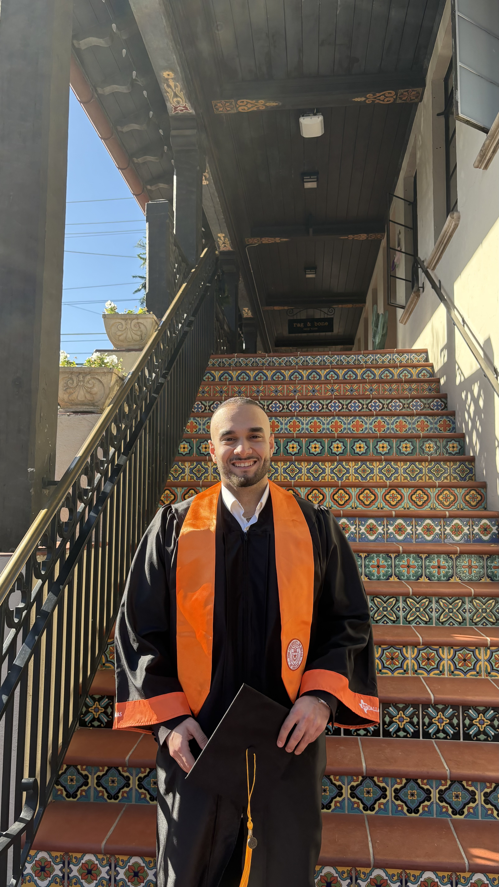

Hi, I'm
Securing cloud infrastructure at scale — Azure, AI/LLM workflows, and automated threat detection.

I'm a Product Security Engineer focused on cloud security, threat detection, and AI-driven security automation. Currently at Toshiba in Frisco, TX, I work across CSPM, endpoint security, and application security to protect enterprise infrastructure at scale.
I hold a B.S. in Computer Science from UT Dallas (2025) and bring hands-on experience with Azure Defender, CrowdStrike, Splunk, and custom automation using PowerShell, KQL, and Python. I'm passionate about leveraging AI/LLM technologies to accelerate security operations and reduce response times.
Outside of work, I lead the Cybersecurity Community as President, mentoring peers and keeping up with emerging threats and AI/ML security trends.
Bachelor of Science in Computer Science
Autonomous AI agent system integrated with cloud deployment infrastructure for real-time threat assessment and security monitoring. Implements agent orchestration to continuously monitor cloud resources and analyze threat intelligence feeds.
Security agent built with Azure AI Foundry to detect publicly exposed cloud resources and identify security vulnerabilities across Azure infrastructure. Features automated email notifications to resource owners with detailed exposure reports.
Full-stack productivity web app built for cybersecurity students and recent graduates actively job hunting. Features AI-powered onboarding via the Claude API that generates personalized weekly goal categories and starter tasks, a step-by-step conversational setup flow, streak tracking, and an AI mentor chat with full conversation memory.
Recognized for outstanding performance, dedication, and contribution as a Product Security Engineer Intern (Fall 2025).
Elected as a top intern across cohort for outstanding contribution to the company.
Industry-recognized certification validating foundational cybersecurity knowledge and skills.
Validates skills in securing cloud environments, architecture, and infrastructure across major platforms.
Professional-level Microsoft certification covering core security principles, identity, and compliance solutions.
Certification covering applied generative AI concepts and their integration into enterprise workflows.
Certification focused on modern networking concepts, protocols, and infrastructure relevant to AI and cloud workloads.
Certification focused on applying generative AI techniques in Security Operations Center workflows.
Certification covering SOC 2 compliance requirements and audit readiness for cloud service organizations.
It is a genuine privilege to recommend Ahmet Koc, who joined our Product Security Engineering team at Toshiba as an intern and very quickly distinguished himself as one of the most promising young engineers I have had the pleasure of working with. He ramped up on complex security topics with remarkable speed, took full ownership of his tasks, and began contributing meaningfully to our cloud security posture in ways that materially improved our visibility into risk. What set him apart was the initiative he showed in stepping up well beyond his assigned scope, organizing and energizing his fellow interns, and elevating the entire cohort experience. Ahmet brings a rare combination of intellectual curiosity, humility, reliability, and quiet leadership. Any team fortunate enough to have him will gain not only a strong product security engineer but a future leader.
Ahmet is not only smart, but he is committed. He does not allow lack of practice in something deter him from completing a task or initializing a new way to handle things. He goes and does his research, finds the right formula and executes. He doesn't wait for someone to do it for him, he gets the job done, by the deadline set forth. You can't teach that. His knowledge and commitment are unparalleled and to say that he builds relationships wherever he is, is an understatement. Ahmet is truly an asset to any team and no matter what the task is, he communicates, visualizes his end plan and works through everything with deadlines in mind and is never afraid to ask questions.
They say not all heroes wear capes, but after working with Ahmet for nearly a year, I'm convinced he's one of them in the cybersecurity world. As our Product Security Intern, Ahmet didn't just 'monitor' our cloud — he became its chief guardian. He has a supernatural ability to spot a misconfigured Azure Storage Access from a mile away and fix it before the rest of us have even finished our morning coffee. What really sets him apart is his ability to translate complex technical jargon into something the rest of the team can actually understand. If you need someone who treats cloud security like a high-stakes chess game (and always wins), hire Ahmet. Solid 11/10 — I'd trust him with our Azure tenants any day!
I have had the privilege of managing Ahmet during his internship as a Security Engineer, and I can confidently say he has been an outstanding addition to our team. Ahmet demonstrated strong analytical skills and a proactive approach in handling security incidents, alerts, and providing actionable recommendations. His ability to quickly assess complex situations, prioritize tasks, and communicate findings clearly made a real impact on our security operations. One of the highlights of his internship was being recognized as the Fall 2025 Intern of the Cohort Award winner, a testament to his exceptional performance and dedication. Beyond technical expertise, Ahmet brought professionalism and a collaborative spirit that made working with him a pleasure.
Breaking down what's happening in cybersecurity — from cloud misconfigurations to AI-powered threats — in plain language.
I'm always open to discussing security challenges, cloud architecture, or new opportunities. Feel free to reach out.